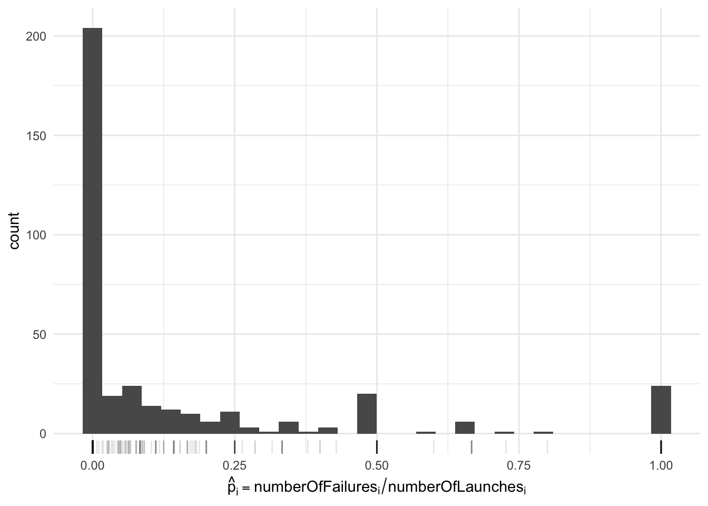

suppressPackageStartupMessages(require("dplyr"))
df = read.csv("../data/failure_counts.csv")
rmarkdown::paged_table(df)Intro to hierarchical models
Outline
Topics
- Hierarchical models.
- Intuition why they decrease prior sensitivity.
Rationale
Hierarchical models, a crowning achievement of Bayesian inference, can be used to decrease prior sensitivity even when the dataset of interest is of limited size.
Example
Example: predicting the probability of failure of the next Delta 7925H launch (so far, we observed this type of rocket has been launched 3 times, with 0 failed launches).
Key idea: use “side data” to inform the prior…
- For example: success/failure launch data from other types of rockets.
- Can we use the following rocket launch dataset to inform prediction for a single rocket type of interest?
How to use “side data”? Two suboptimal approaches
For pedagogy, we will first cover two simple heuristics to incorporate “side data” and describe their limitations.
Then we will cover hierarchical models in the next section, showing how they address the limitations of simpler methods.
First try (do not use this one!)
- Merge all the data into one type?
- I.e. just sum the columns in the data:
sum(df$numberOfLaunches)[1] 5667sum(df$numberOfFailures)[1] 431Why merging everything is a bad idea?
Click for choices
- They are independent.
- They are identically distributed.
- Some of these types of rockets are very different than the one under study.
- All of the above.
- None of the above.
Click for answer
Some of these types of rockets are very different than the one under study (Delta 7925H). For example some of them are very old, made by different space agencies, etc.
An indeed, the aggregated failure rate is high compared to what you would expect from modern “workhorse” rockets (<1%):
sum(df$numberOfFailures) / sum(df$numberOfLaunches)[1] 0.07605435We want to consider the different types of rockets as a population and model the variability within that population.
Towards an improved way to use side data
- Background: “mean–pseudo-sample-size” reparameterization of the Beta distribution.
- A reparametrization is a different labelling of a family such that you can go back and forth between the two labellings.
- Consider \[\alpha = \mu s, \;\; \beta = (1 - \mu) s\] where \(\mu \in (0, 1)\), \(s > 0\).
- Interpretation:
- \(\mu\): mean of the Beta
- \(s\): measure of “peakiness” of the density, higher \(s\) corresponds to more peaked; roughly, \(s \approx\) number of data points that would make the posterior peaked like that.
- Why did we do this reparameterization?
- \(\to\) it should now be more intuitive how we can use “side data” to inform \(\mu\)…
Second try (still suboptimal, but not as bad)
- Estimate a failure probability \(\hat p_i\) for each type of rocket \(i\).
- Fit a distribution \(p(\mu)\) on those \(\{\hat p_i\}\).
- Use this distribution \(p(\mu)\) as the prior on \(\mu\)?
suppressPackageStartupMessages(require("ggplot2"))
suppressPackageStartupMessages(require("latex2exp"))
ggplot(df, aes(x = numberOfFailures / numberOfLaunches)) +
geom_histogram() +
xlab(TeX("$\\hat{p}_i = \\textrm{numberOfFailures}_i / \\textrm{numberOfLaunches}_i$")) +
geom_rug(alpha = 0.1) +
theme_minimal()
Question: what is the weakness of using a prior fitted on this histogram?
Click for choices
- It does not take into acount the uncertainty of the fitted \(\hat p_i\).
- The support should go beyond \([0, 1]\)
- The density is not continuous.
- All of the above.
- None of the above.
Click for answer
- First, notice the “bumps” at 1/2 (and 1, 1/4, etc)…
- Most of the counts at 1/2 correspond to types of rockets with 1 failure out of 2 launches!
- But if you fit a curve to this data, these “bumps” will have a large undesirable effects.
- More broadly, we want to take into account uncertainty in each of these \(\hat p_i\)’s.
- Also: less clear how to generalize this method to handle the pseudo-sample-size \(s\).
Hierarchical models: a better way to use side data
Solution: go fully Bayesian!
Recall: our Bayesian recipe…
- Construct a probability model including
- random variables for what we will measure/observe
- random variables for the unknown quantities
- those we are interested in (“parameters”, “predictions”)
- others that just help us formulate the problem (“nuisance”, “random effects”).
- Compute the posterior distribution conditionally on the actual data at hand
- Use the posterior distribution to make a decision
What it means here: we model the launcher type’s population parameters (\(\mu, s\)) as random variables. We are not interested in these other launcher types, but they help us inform inference about the type of rocket we are interested in.
Graphical model
Mathematical description
- Share these two “population parameters” across all launch types \[p_i | \mu, s \sim {\mathrm{Beta}}(\mu s, (1 - \mu) s)\]
- Likelihood same as before: \(F_i | p_i \sim {\mathrm{Binom}}(n_i, p_i).\)
- We still need to put prior on \(\mu\) and \(s\)…
- …but as we’ll discuss next, you should expect this prior choice to be less sensitive.
- Example:1 \(\mu \sim {\mathrm{Beta}}(1,1) = {\mathrm{Unif}}(0, 1)\), \(s \sim {\mathrm{Exp}}(1/10000)\)
Decrease prior choice sensitivity
It seems we have introduced new problems as now we again have hyper-parameters, namely those for the priors on \(\mu\) and \(s\)!
Key point: yes, but now we are less sensitive to these choices! Why?
Heuristic: look at the node \(n\) connected to the hyper-parameters…
- If most of \(n\)’s edges link to hyper-parameters: posterior more sensitive to hyper-parameters.
- If most of \(n\)’s edges link to random variables connected to data: posterior will probably be less sensitive.
Before going hierarchical: for maiden/early flights we had
Note: \(p\) is connected to only a small number of observations.
After going hierarchical:
Note: each of \(\mu, s\) is connected to a large population of \(p_i\)’s, which in turn are linked with data.
Footnotes
why do we pick such a small value, \(1/10000\)? Recall the parameter of an exponential is a rate which is 1/mean. So a mean of 10000 encodes we put significant mass to values up to \(O(10000)\). This is sometimes described as a “vague prior”.↩︎